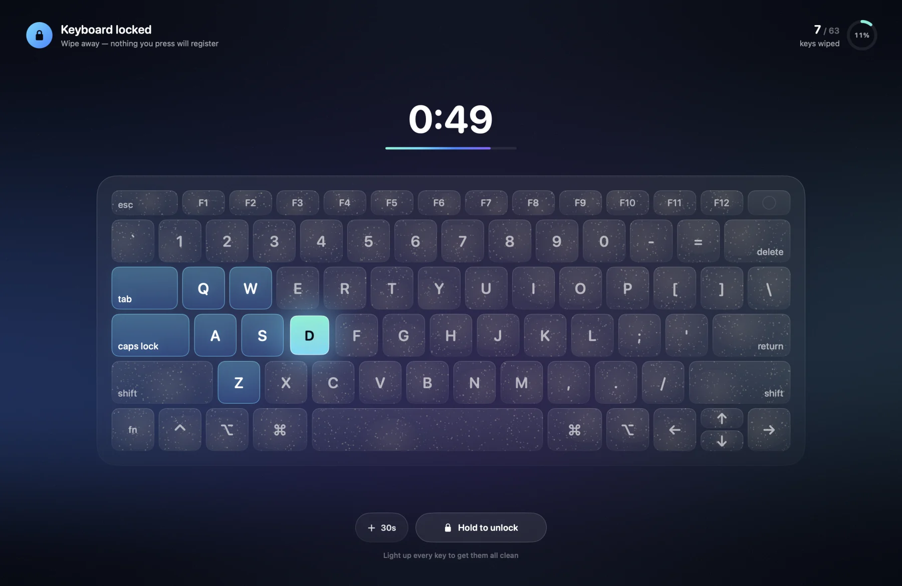
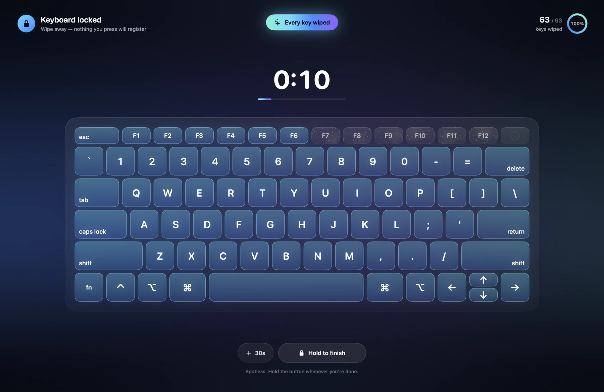
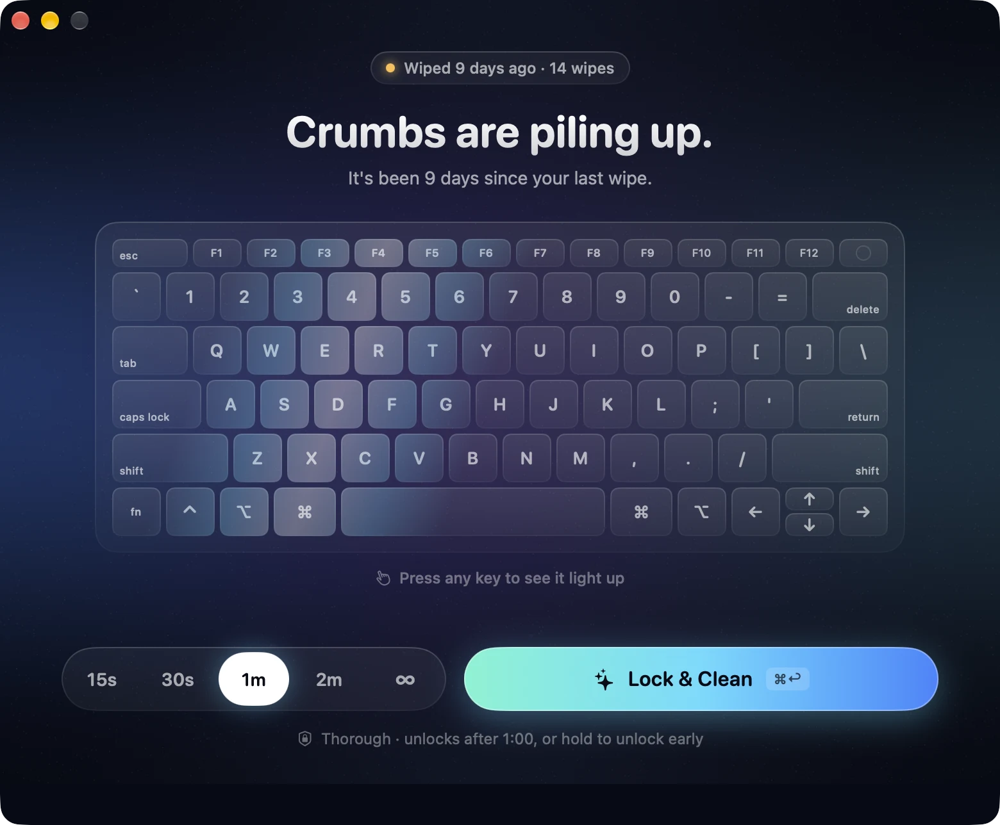
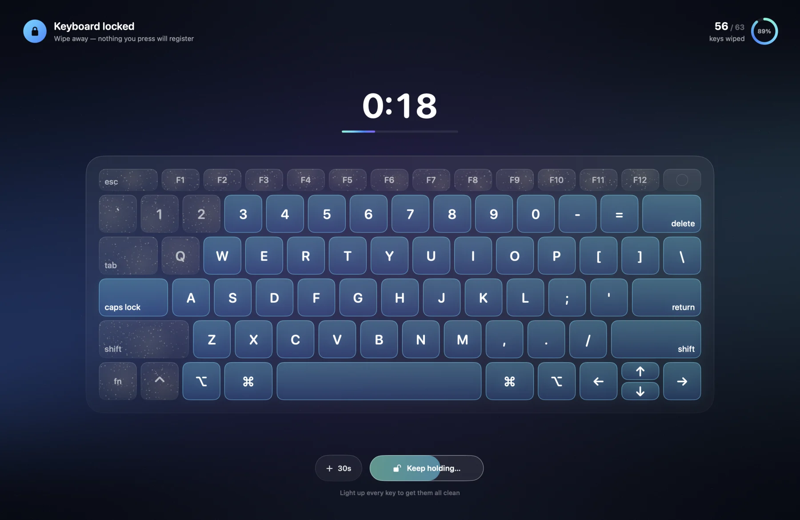
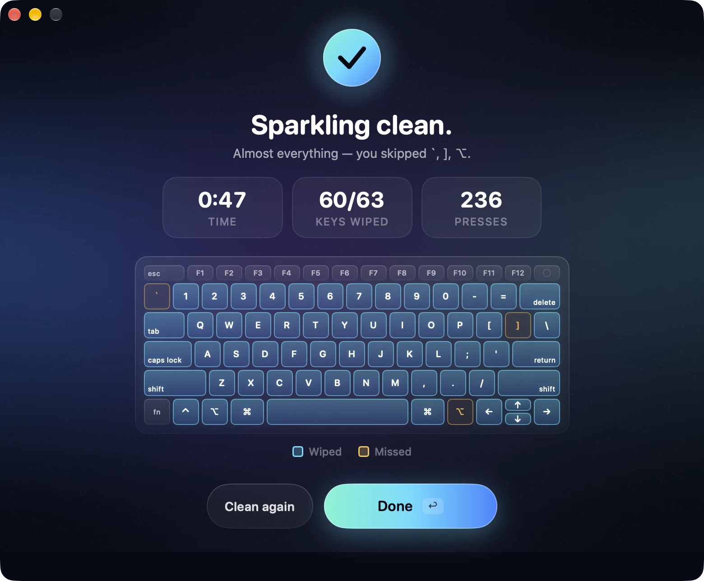
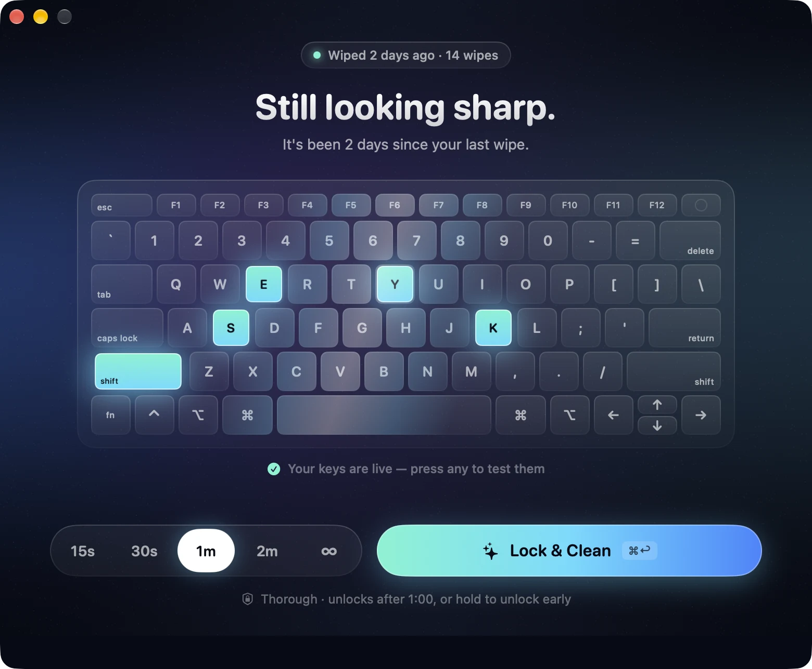

Watch the dust disappear.
Every key you haven't wiped yet looks dusty. Press it while cleaning and it turns bright and clean with a little sparkle, so you always know exactly what's left.
- A to-scale MacBook keyboard on screen
- Follows the physical keys, whatever your input language

Don't miss a single key.
A live counter tracks all 63 main keys and celebrates the moment every one of them is clean.
- Progress ring with a percentage
- Esc and the function row light up as a bonus

Lock it your way.
Choose 15 seconds, 30 seconds, 1 or 2 minutes, or stay locked until you're done. Need a little longer? Add 30 seconds with one click while cleaning.
- Your last choice is remembered
- Press ⌘↩ to lock and start

No accidental unlocks.
To unlock early, press and hold the unlock button. A stray swipe while you wipe the trackpad can't end the session.
- Dock, menu bar and app switching stay hidden
- Extra displays are covered while you clean

See how clean it got.
After unlocking you get the time spent, keys wiped and total presses, plus a map that points out any keys you missed.
- Clean again with one click
- Remembers when you last cleaned

Test every key afterwards.
On the start screen, press any key and watch it light up. It's a quick way to check that everything still works after cleaning.
- Works with modifier keys too
- Nothing is typed anywhere

Small app, big difference.
Everything you need to clean your keyboard, nothing you don't.
Locks every key
Letters, shortcuts, Esc, even ⌘Q. Nothing you press gets through.
Every display
Extra displays are covered so a click there can't send keys to another app.
No permissions
No Accessibility access, no system extensions. It just works.
Completely private
No accounts, no tracking, no network access. Key presses are never recorded.
Knows when it's time
See how long it's been since your last wipe and how often you clean.
Made for the Mac
Built with SwiftUI. Fast, lightweight and at home on macOS.
A cleaner keyboard in a minute.
No accounts. No setup. Just lock, wipe and go.